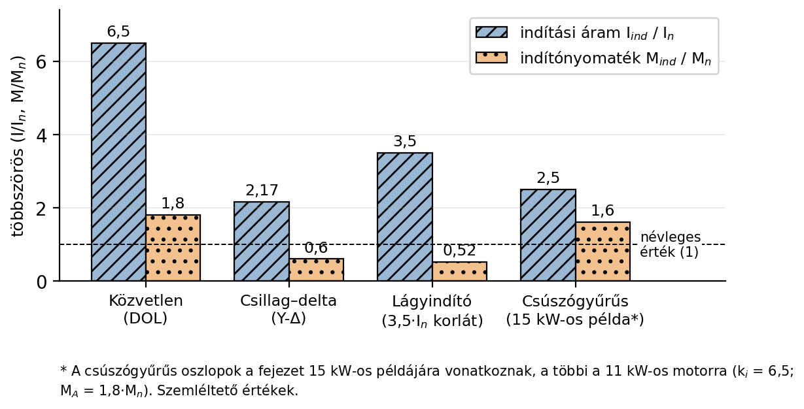
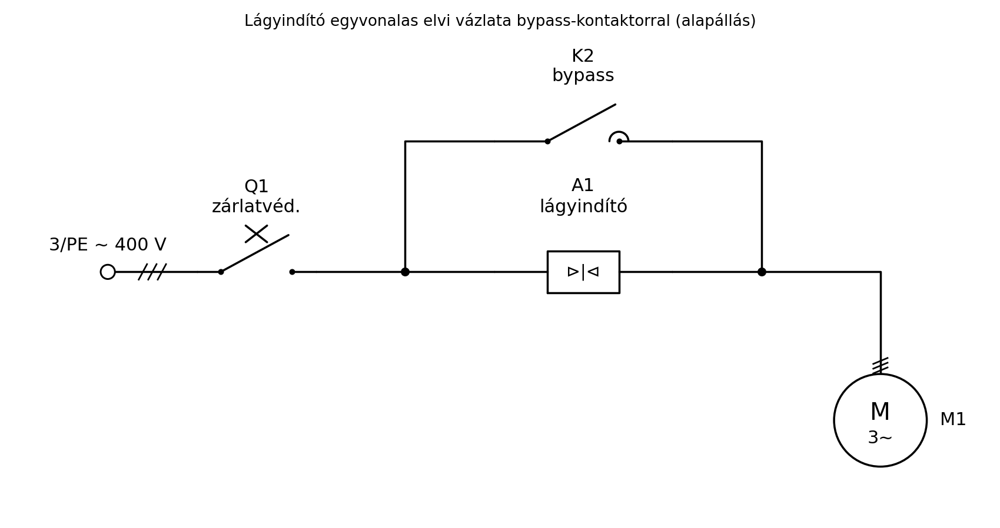
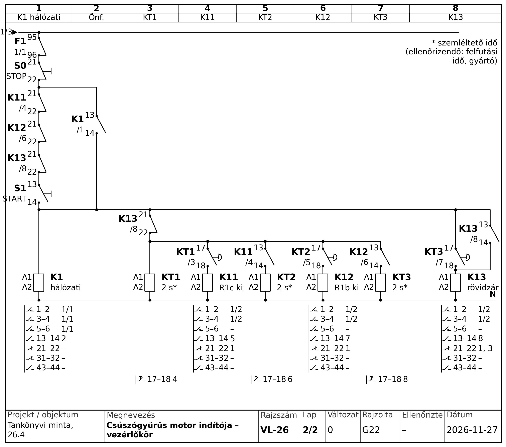
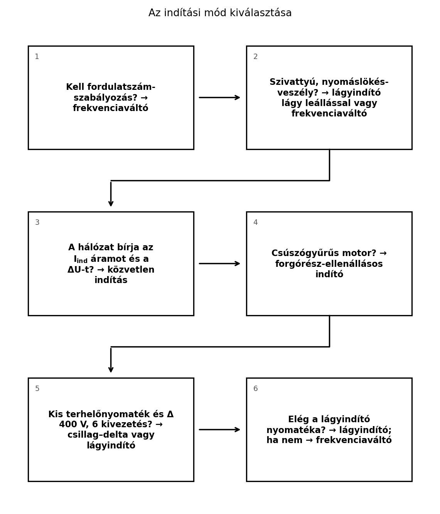

![Y-Δ indítás főáramköri vázlata (háromvonalas) - Szemléltető, háromvonalas rajz. F1 zárlatvédelem, K1 hálózati mágneskapcsoló, F2 hőkioldó (a K3 leágazása után, a tekercsáramot méri; beállítása ≈ 0,58·I_n – ellenőrizendő: gyártói ajánlás, lásd a vezérlésnél). K1 a hálózatot az U1, V1, W1 kapcsokra adja. Csillagban K2 köti össze az U2, V2, W2 kapcsokat (csillagpont); deltában K2 nyit, és K3 az U2-t a V1-re, a V2-t a W1-re, a W2-t az U1-re kapcsolja. K3 és K2 villamosan és mechanikusan reteszelt. PE a motortesten.](assets/ve096-diagram-1.png)
Az aszinkron motor indítása az egyik leggyakrabban félreértett része a hajtástechnikának. A szerelő a munkahelyen leggyakrabban akkor találkozik vele, amikor egy motor bekapcsolásakor a világítás megbillen, egy kismegszakító leold, vagy a szomszédos gépsor vezérlése újraindul. Ilyenkor nem feltétlenül a motor hibás, hanem az indítási módot kell a hálózathoz és a terheléshez igazítani.
Álló motornál a forgórész fordulatszáma nulla, vagyis a forgórészhez képest a forgó mágneses mező a szinkron fordulatszámmal halad. Az indukált forgórész-áram ezért a legnagyobb: a gép ilyenkor rövidre zárt transzformátorként viselkedik, amelynek a szekunder oldala (a forgórész) áll. A hálózatból felvett indítási áramlökés jellemzően a motor névleges áramának 5–8-szorosa. Ez rövid ideig tart, de a hálózati impedancián akkora feszültségesést okozhat, hogy a közelben lévő fogyasztók feszültsége leesik. Ezért a nagyobb motoroknál nem mindegy, hogyan indítunk.
Definíció. Indítási áram
:
az a legnagyobb vonali áram, amelyet a motor álló állapotból való
felgyorsítása közben a hálózatból felvesz.
Definíció. Indítónyomaték
:
az a nyomaték, amelyet a motor álló állapotban, a forgórész
fordulatszámának nulla értékénél kifejt.
Definíció. Indítási áramszorzó
:
a motorkatalógusokban megadott arány,
.
Az indítási mód kiválasztásakor két kérdést kell feltenni:
A legegyszerűbb és legolcsóbb mód, amikor a motort közvetlenül, teljes hálózati feszültségre kapcsoljuk, például egy mágneskapcsolóval vagy motorvédő kapcsolóval. A motorkapcsokra azonnal a névleges feszültség kerül, a motor a természetes nyomaték–fordulatszám görbéje szerint gyorsul fel.
Előnyei: egyszerű, kevés alkatrész, teljes
indítónyomaték.
Hátránya: nagy indítási áramlökés, ami
feszültségletörést okozhat.
A közvetlen indítás tipikus alkalmazási területe a kis teljesítményű motor, illetve az olyan ipari hálózat, ahol a zárlati teljesítmény nagy, és a hálózati engedélyes megengedi. A hálózati engedélyes gyakran korlátozza a legnagyobb indítási áramot; ezt mindig ellenőrizni kell (ellenőrizendő: az adott elosztói terület csatlakozási feltételei).
A csillag–delta indítás a motor tekercseinek kapcsolási módját használja ki. Feltétel. Y-Δ indítás csak olyan motorral végezhető, amelynek tekercse delta kapcsolásban a hálózati vonali feszültségre méretezett – 400 V-os hálózaton Δ 400 V / Y 690 V adattáblájú motorral –, és mind a hat tekercsvég (U1…W2) hozzáférhető. A 230/400 V Δ/Y motor 400 V-on Y-Δ indításra nem alkalmas (lásd Kapocsdoboz, csillag–delta bekötés és forgásirány). Ilyen motornál a tekercs névleges feszültsége 400 V. Indításkor a tekercseket csillagba kapcsolják, így minden tekercsre csak jut. Amikor a motor felgyorsult, a kapcsolás deltába vált.
Törvény. A Y-Δ indítás vonali indítási árama harmada a közvetlen delta indítási áramának, és az indítónyomaték is harmada.
Levezetés. Delta kapcsolásban minden fázistekercsre a vonali feszültség jut, csillagkapcsolásban pedig . A fázisáram közelítőleg arányos a fázisfeszültséggel, ezért a csillagkapcsolás fázisárama -szorosa a delta fázisáramának. Csillagkapcsolásban a vonali áram megegyezik a fázisárammal, delta kapcsolásban a vonali áram -szorosa a fázisáramnak. A hálózati vonali áramok aránya tehát:
A nyomaték a fázistekercs feszültségének négyzetével arányos:
∎
A kapcsolási sorrend a következő:
Az alábbi ábra a példa 11 kW-os motorjának nyomaték- és áramgörbéjét mutatja a fordulatszám függvényében, közvetlen (delta) és csillag kapcsolásban. Felül látszik, hogy csillagban a nyomaték mindenütt a deltás érték harmada (indításkor ), alul pedig az, hogy mi történik az átkapcsoláskor: 85 %-os fordulatszámnál az áram kb. -ről csak kb. -re (59 A) ugrik, 50 %-nál viszont kb. -re (120 A), ami majdnem a közvetlen indítás -es áramlökése. A görbék szemléltető modellből számoltak (Kloss-alak, ), nem mért értékek. Az interaktív változatban az átkapcsolási fordulatszám és a terhelés típusa (ventilátor vagy állandó ) állítható; az ábra kijelzi az áramugrást, és figyelmeztet, ha a motor csillagban nem gyorsul fel a beállított fordulatszámig.

A vezérlési oldalt részletesen a Csillag–delta indítás vezérlése alfejezet tárgyalja.
A lágyindító félvezetős kapcsolóelemekkel, jellemzően tirisztorokkal fokozatosan emeli a motorkapcsok feszültségét. Nem változtatja a frekvenciát, csak a feszültséget, ezért a motor fordulatszáma a természetes aszinkron jelleggörbe mentén alakul, de az indítási áramot korlátozza.
Definíció. Lágyindító (soft starter): olyan motorindító készülék, amely az indítás alatt a motor kapocsfeszültségét fokozatosan növeli, általában áramkorlátozással.
A lágyindító fontosabb beállításai:
A lágyindító árama a gyártói adat szerint állítható, de a nyomatékra vonatkozó összefüggés mindig érvényes:
Szabály. A motor nyomatéka közelítőleg a kapocsfeszültség négyzetével arányos. Ha a feszültséget a felére csökkentjük, az indítónyomaték körülbelül a negyedére esik.

Figyeld meg: a csillag–delta és a lágyindító áramban kedvező, de a nyomatékuk a névleges alá esik, ezért csak kis terhelőnyomatékkal induló gépnél használhatók; a csúszógyűrűs oszlop egy másik (15 kW-os) motorra vonatkozik, a részleteket lásd a következő szakasz példájában és az összehasonlító táblázat nyomatékoszlopában.
A lágyindító fázisonként egy-egy ellenpárhuzamos tirisztorpárral „vágja” a hálózati szinuszt, így a motor kapocsfeszültsége a beállított kezdőfeszültségről a rámpaidő alatt nő a teljes hálózati feszültségig (feszültségrámpa). Az áramkorlát üzemmódban a készülék a feszültséget csak addig emeli, amíg a vonali áram el nem éri a beállított korlátot. Mivel a nyomaték a feszültség négyzetével arányos (), a csökkentett feszültség az áramot arányosan, a nyomatékot négyzetesen csökkenti – ezért a lágyindító csak kis terhelőnyomatékkal induló gépnél (szivattyú, ventilátor, üresen induló szállítószalag) elegendő, nehéz indításnál (teli zúzógép, nagy lendkerék) nem. A felfutás végén a tirisztorokon folyamatosan disszipálódó hő elkerülésére a bypass-kontaktor (K2) áthidalja a lágyindítót, és a motor árama a K2 főérintkezőin folyik; sok készülékben a bypass beépített. Az elvet az alábbi egyvonalas vázlat mutatja:

Figyeld meg, hogy a K2 a lágyindító be- és kimeneti kapcsa közé, azzal párhuzamosan kapcsolódik, tehát a K2 behúzásakor a motor feszültsége már teljes – a K2 nem indít, csak áthidal. A teljes fő- és vezérlőkört (hálózati kontaktor, indítójel, „felfutás kész” relé, hibarelé, kapocsjelek) a Motorvédelmek, lágyindítók és frekvenciaváltók az elosztóban alfejezet „Lágyindító bypass-kontaktorral: fő- és vezérlőkör” része (35.1) mutatja.
A csúszógyűrűs aszinkron motor forgórész-tekercselése szigetelt, és a tekercsvégeket csúszógyűrűkre vezetik ki. A keféken keresztül a forgórész áramkörébe külső ellenállásokat lehet iktatni.
Törvény. A forgórész áramkörébe kapcsolt külső ellenállás:
A maximális nyomaték nagysága a forgóköri ellenállástól nem függ, csak az a szlip változik, ahol a maximális nyomaték fellép. Ez azt jelenti, hogy a külső ellenállást úgy lehet méretezni, hogy a maximális nyomaték éppen álló állapotnál, azaz -nél jöjjön létre. Ekkor a motor a legnagyobb nyomatékával tud elindulni, miközben az indítási áram a névleges áram 2–3-szorosára csökkenthető.
Az indítás folyamata:
A fokozatok kiiktatását a gyakorlatban nem kézzel, hanem kontaktorokkal és időrelékkel vezérlik. A következő kétlapos tervlap egy háromfokozatú indító fő- és vezérlőkörét mutatja. Az 1. lapon a főkör: Q1 főkapcsoló → K1 hálózati kontaktor → F1 hőkioldó → az M1 állórésze (U1, V1, W1, PE); a forgórész K, L, M csúszógyűrűiről az R1 háromfázisú, csillagba kötött indítóellenállás indul, fázisonként három fokozattal (R1a, R1b, R1c). K11 a legkülső fokozatot (R1c), K12 az R1b-t is, K13 a csúszógyűrűket közvetlenül zárja rövidre (két főérintkező köti össze a három fázist csillagponttá). A 2. lapon a 230 V-os vezérlőkör látható, alatta az érintkezőtükrökkel.

A működés öt lépésben (a HTML-kiadásban a lap lejátszható, az idődiagram mutatja a sorrendet; az időzítés 2–2–2 s, szemléltető – a valós értéket a gép felfutási ideje és a gyártó adja, ellenőrizendő):
Miért kell a K11–K13 nyitó érintkezőiből álló indítási retesz az S1 ágában? Ha egy fokozatkontaktor beragad (például K13 hegedt főérintkezővel), a motor ellenállás nélkül, közvetlen indítással indulna, nagy árammal és kis nyomatékkal; a retesz ilyenkor nem engedi az indítást. A retesz csak az S1 ágában van, ezért a már futó motort a K13 behúzása nem kapcsolja le (K1 az önfenntartó 13–14-en át tart).
A hőkioldó (F1) az állórész körében, K1 után van, és a vezérlőkörben a 95–96 nyitó érintkezőjével minden kontaktort lekapcsol. Az indítóellenállás rövid idejű üzemre méretezett: ha a fokozatok kiiktatása elmarad (elállított vagy hibás időrelé, be nem húzó K11–K13), az ellenállás és a forgórész túlmelegszik, a kefék gyorsan kopnak – ez a lenti Hiba 3. oka. Ellenőrző kérdés: a tervlap tükre szerint melyik oszlopban van K11 13–14 érintkezője, és mi történik, ha ez az érintkező nem zár?
A rajz betűjelei a könyv konvencióját követik (F1 hőkioldó, F2 vezérlőkör-kismegszakító), a kontaktorok segédérintkező-számozása gyártófüggő (ellenőrizendő: gyártói adatlap).
| Indítási mód | Áram a hálózatból | Indítónyomaték | Motorkivezetés | Jellemző alkalmazás | Hatás a hálózatra, aggregátorra |
|---|---|---|---|---|---|
| Közvetlen (DOL) | – | – (ellenőrizendő: gyártói adatlap) | 3 | kis és közepes motor, erős hálózat | legnagyobb lökés és kVA-igény |
| Y-Δ | kb. | kb. | 6 (Δ 400 V-os motor) | üres vagy kis terhelésű indítás | kisebb lökés; átkapcsoláskor új csúcs |
| Autotranszformátoros | (ellenőrizendő) | (ellenőrizendő) | 3 | nagy motorok, régi berendezések | csökkentett lökés; átkapcsolási csúcs lehet |
| Lágyindító | állítható, tip. – | 3 | szivattyú, ventilátor, szállítópálya | korlátozott áram; felharmonikus a rámpa alatt | |
| Frekvenciaváltó | kb. – a felfutás alatt (ellenőrizendő: gyártói adat) | névleges nyomaték álló helyzettől is (ellenőrizendő: gyártói adat) | 3 | szabályozott fordulatszám: szivattyú, ventilátor, szalag | legkisebb lökés; tartós felharmonikus, aggregátornál gyártói egyeztetés |
| Csúszógyűrűs | – | akár – | 3 + K, L, M | nagy tehetetlenség: malom, daru, emelő | mérsékelt, fokozatonkénti lökés |
Az utolsó oszlop tájékoztató (ellenőrizendő: aggregátor- és készülékgyártói adat). Aggregátoros táplálásnál a motorindítás kVA-igényét a Szünetmentes áramforrások, aggregátorok és akkumulátorok alfejezet számolja ki; hálózat-visszatéréskor a motorokat lépcsőzetesen indítjuk újra (Felvonó- és állandó üzemű fogyasztók elosztói).
Az autotranszformátoros (takarékkapcsolású) indításnál a motor indításkor egy autotranszformátor megcsapolásáról kap csökkentett, feszültséget (például ), majd teljes feszültségre kapcsol. A motoráram -szorosára csökken, a transzformátor pedig a hálózati oldalon ezt még egyszer -szorosára csökkenti: , és a nyomaték is (a transzformátor mágnesező árama és impedanciája nélkül; ellenőrizendő: gyártói adat).
A kérdéseket felülről lefelé, sorban tedd fel. Az első „igen” válasznál megállhatsz; „nem” esetén lépj a következőre.

A levelekhez tartozó rajzok és részletek:
Szabvány. A motorindító kapcsolókészülékekre, mágneskapcsolókra és motorvédő kapcsolókra az MSZ EN 60947 sorozat vonatkozik; a motorindító kombinációk kialakítását és a gyártói bekötési előírásokat mindig az adott készülék dokumentációja szerint kell követni (ellenőrizendő: aktuális szabványkiadás és gyártói adatlapok).
Egy kisebb ipari csatlakozású üzemben 15 kW-os szivattyúmotort közvetlen indítással helyeztek üzembe. Az első indításnál a szomszédos gépsor PLC-je újraindult, mert a hálózati feszültség rövid időre a megengedett érték alá esett. A hálózati engedélyes előírta az indítási áram korlátozását (ellenőrizendő: az adott hálózati engedélyes csatlakozási feltételei).
A megoldás lágyindító beépítése lett. Az áramkorlátot értékre állították, az indítási időt 8 s-ra, a kezdőfeszültséget pedig a szivattyú nyomatékigényéhez igazították. A motor így lökésmentesen indult, a PLC-k nem hibásodtak, és a csőhálózatban sem keletkezett nyomáslökés.
Tanulság: az indítási mód kiválasztása nem csak a motor, hanem a hálózat és a környező fogyasztók védelmét is szolgálja.
Hiba 1. A Y-Δ átkapcsolás túl korán történik. Ha a motor még nem érte el a névleges fordulatszám 80–90%-át, a delta kapcsolás pillanatában majdnem akkora áramlökés keletkezik, mint a közvetlen indításnál. A motorvédő kapcsoló vagy a kismegszakító leold. Helyes: az átkapcsolást időrelével, de a gyakorlatban a motor felgyorsulásának ellenőrzésével és a gyártói ajánlás szerinti időzítéssel kell beállítani.
Hiba 2. A lágyindító áramkorlátját túl alacsonyra állítják. A motor nyomatéka a feszültség négyzetével csökken, ezért előfordulhat, hogy a motor nem tud elindulni, csak zümmög, és a hőkioldó lekapcsolja. Helyes: a kezdőfeszültséget és az áramkorlátot a terhelőnyomaték ismeretében kell beállítani; ha a motor terhelten nem indul, az áramkorlátot a gyártó által megengedett határon belül növelni kell.
Hiba 3. Csúszógyűrűs motornál a külső ellenállásfokozatokat nem iktatják ki időben. A forgórész és az ellenállások túlmelegszenek, a kefék gyorsan kopnak. Helyes: az indítási folyamatot az ellenállásfokozatok kiiktatására tervezett kontaktorokkal és időrelékkel, vagy automatikus indítóval kell vezérelni.
Hiba 4. Közvetlen indítást alkalmaznak olyan hálózaton, ahol a hálózati engedélyes az indítási áramot korlátozza. A nagy indítási áram feszültségletörést okoz, és a szomszédos fogyasztók leállhatnak. Helyes: a csatlakozási feltételeket és a hálózati visszahatást mindig ellenőrizni kell a kivitelezés előtt.
Hiba 5. Y-Δ indítást választanak olyan motorra, amelynek adattáblája 230/400 V Δ/Y. Következmény: 400 V-on csak csillagban üzemeltethető; a Y-Δ indítóval deltában 400 V jutna a 230 V-os tekercsre, és a motor károsodik. Helyes: Y-Δ indításhoz Δ 400 V / Y 690 V adattáblájú motor kell (lásd Kapocsdoboz, csillag–delta bekötés és forgásirány).
Hiba 6. Nehézindításnál (nagy tehetetlenségű hajtás, hosszú felfutás) a szokásos 10-es kioldási osztályú hőkioldó marad a körben. Következmény: a motor felfutás közben old le. Helyes: a felfutási időt ki kell számolni (Hajtástechnika: gépelemek, tengelykapcsoló, csapágy, szíj), és ehhez kell kioldási osztályt vagy indítási módot választani (Motorvédő kapcsoló, hőkioldó, megszakító és szakaszoló); a beállított áramot emelni nem szabad.
A táblázat a helyszíni tünetből indul. A mérés jele: (F) feszültségmentes mérés az öt biztonsági szabály szerint (kikapcsolás, visszakapcsolás elleni biztosítás, feszültségmentesség ellenőrzése, földelés-rövidrezárás, szomszédos aktív részek elhatárolása); (J) feszültség alatti mérés, csak jogosult személy vagy felügyelete mellett, lakatfogóval, illetve megfelelő mérési kategóriájú műszerrel.
| Tünet | Valószínű ok | Mérés | Javítás |
|---|---|---|---|
| DOL: a kismegszakító indításkor old | B jelleg, az indítási áram meghaladja a mágneses kioldási küszöböt | (J) csúcsáram lakatfogóval, csúcsérték-tartással | motorvédő kapcsoló vagy C/D jelleg, kioldási feltétel ellenőrzésével |
| DOL: lassan gyorsul, melegszik | alulfeszültség indításkor (nagy kábel-), nehéz terhelés | (J) kapocsfeszültség és áram indításkor | keresztmetszet, nyomvonal, indítási mód felülvizsgálata |
| Y-Δ: átkapcsoláskor nagy lökés, kioldás | túl korai váltás (rövid időrelé-idő) | (J) fordulatszám és áram; időrelé beállítása | átkapcsolási idő a felfutáshoz |
| Y-Δ: csillagban nem gyorsul fel | a terhelőnyomaték nagyobb, mint | (J) áram, fordulatszám; (F) a gép szabadon forog-e | tehermentes indítás vagy más indítási mód |
| Y-Δ: deltába váltáskor zárlat | K2–K3 reteszelés hibás, hegedt K2 | (F) 21–22 reteszérintkezők és K2 főpólusok | retesz javítása, kontaktor cseréje |
| Lágyindító: „fázishiány” vagy „túláram” jelzés | hiányzó bemeneti fázis, laza kapocs; áramkorlát vagy indítási idő nem illik a terheléshez | (J) bemeneti feszültségek; (F) kapcsok, folytonosság | kötés javítása; beállítás a gyártói határon belül |
| Lágyindító: a felfutás végén zúg, melegszik | a bypass-kontaktor nem húz be | (J) „felfutás kész” relé és K2 tekercsfeszültség; (F) K2 érintkezők | relé, vezetékezés vagy K2 javítása |
| Lágyindító: túlhőmérséklet | túl sűrű indítás, hibás ventilátor, meleg szekrény | indítás/óra számlálása; (F) ventilátor, hűtőborda | indítási gyakoriság, hűtés, nagyobb készülék |
| Csúszógyűrűs: szikrázó kefék, meleg gyűrű | kopott kefe, gyenge rugó, szennyezett gyűrű | (F) kefehossz, rugóerő, gyűrűfelület | kefecsere, tisztítás, rugó beállítása |
| Csúszógyűrűs: csak lassan forog | egy fokozat nem iktatódik ki (pl. K13 nem húz be) | (J) K13 és KT3 működése; (F) tekercs és ellenállásfokozatok | hibás időrelé, tekercs vagy érintkező cseréje |
| Csúszógyűrűs: indításkor nagy áram, rángás | rövidre zárt forgórésszel indult (beragadt fokozatkontaktor, hibás indítási retesz) | (F) K11–K13 főérintkezők és 21–22 retesz | kontaktorcsere, a retesz visszaállítása |
Részletek: Motorvédő kapcsoló, hőkioldó, megszakító és szakaszoló, Csillag–delta indítás vezérlése, Vezérlések hibakeresése, lágyindító bypass-kontaktorral; mérési módszerek: Diagnosztika: szemrevételezés, mérések, hibajegyzőkönyv.
Gyakorlás: ennek az alfejezetnek a kidolgozott példái, gyakorlatai és megoldással ellátott feladatai az Összefoglaló feladatgyűjtemény villanyszerelő tanulóknak című kötet 26.4 szakaszában találhatók.
Az aszinkron motor álló állapotból való indításakor a hálózatból felvett indítási áram a névleges áram 5–8-szorosa. A túlzott indítási áram feszültségletörést okozhat, ezért az indítási módot a hálózat és a terhelés ismeretében kell kiválasztani. A közvetlen indítás egyszerű, de nagy áramlökést okoz. A Y-Δ indításnál a motor indításakor a tekercsek csillagkapcsolásban, majd delta kapcsolásban futnak; a hálózati indítási áram és az indítónyomaték egyaránt a közvetlen delta indítás értékének egyharmada. Ez a Y-Δ indítás vezérlésének alapja a Csillag–delta indítás vezérlése alfejezetben. A lágyindító feszültségcsökkentéssel korlátozza az áramot; a nyomaték közelítőleg a kapocsfeszültség négyzetével arányos. A csúszógyűrűs motor külső forgórész-ellenállással csökkentett áram mellett nagy indítónyomatékot tud kifejteni, ezért nagy tehetetlenségű gépekhez használják. Az indítási módot mindig a motor, a terhelés és a hálózati engedélyes előírásai szerint kell megválasztani.
Továbbvitt eredmény. A Y-Δ indítás áram- és nyomatékaránya egyharmad, a motor nyomatéka a kapocsfeszültség négyzetével arányos, a csúszógyűrűs gép forgórész-ellenállása a maximális nyomaték szlipjét tolja el. Ezeket az eredményeket használjuk a Fordulatszám-változtatás, Dahlander, frekvenciaváltó és fékezés és a Csillag–delta indítás vezérlése alfejezetekben.